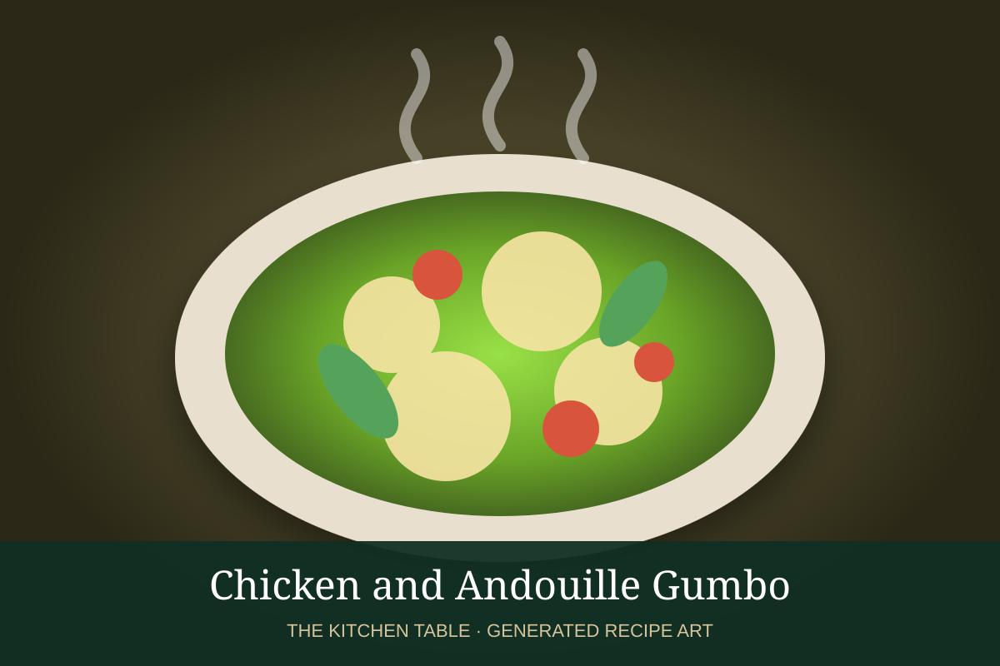

← Back to all recipes
CHICKEN · CAJUN / CREOLE
Chicken and Andouille Gumbo
Smoky chicken-and-andouille gumbo built on a deep brown roux with onion, celery, bell pepper, and Cajun spices.
2 hrServes 8

Photo: Wikimedia Commons
Ingredients
- 1/2 cup neutral oil
- 1/2 cup all-purpose flour
- 1 large onion, diced
- 1 green bell pepper, diced
- 3 celery ribs, diced
- 4 garlic cloves, minced
- 12 oz andouille sausage, sliced
- 2 lb boneless or bone-in chicken thighs
- 6 cups chicken stock
- 2 bay leaves
- 1 tsp dried thyme
- 1 tbsp Cajun seasoning
- 1/2 tsp cayenne, optional
- Salt and black pepper
- Cooked white rice, scallions, and parsley, for serving
Preparation
- Season the chicken. Brown the andouille in a heavy pot; remove. Brown the chicken lightly and remove.
- Add oil as needed, then whisk in flour and cook the roux slowly until deep brown, stirring constantly.
- Add onion, bell pepper, and celery and cook until softened; add garlic.
- Gradually stir in stock, then add bay leaves, thyme, Cajun seasoning, sausage, and chicken.
- Simmer gently for about 1 hour, until the chicken is tender. Remove bones if needed and shred or break the chicken into large pieces.
- Adjust seasoning and serve over rice with scallions and parsley.